onepiece.Software
by Jendrik Johannes
Hi! I am Jendrik and I work on software (20 years and counting).
Software is everywhere and developing it is both awesomely fascinating and frustratingly complex.
I believe a key factor to craft good software is avoiding accidental complexity, by structuring products in terms of connected components and systems.
Designing the connections between these is as important as the components and systems themselves.
We need to embrace the fact that everything needs to work together in harmony to form the final product.
However you turn it, in the end, a software product is a onepiece where everything is connected.
If you work on software and suffer from accidental complexity, maybe I can help?
Understanding Gradle
I share best practices for well-structrued and maintainable Grade projects on my YouTube channel.
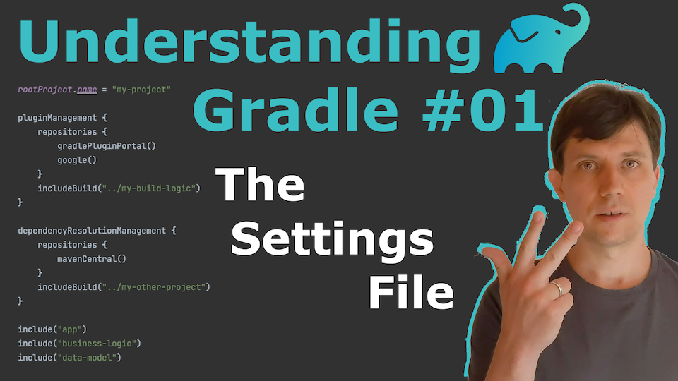
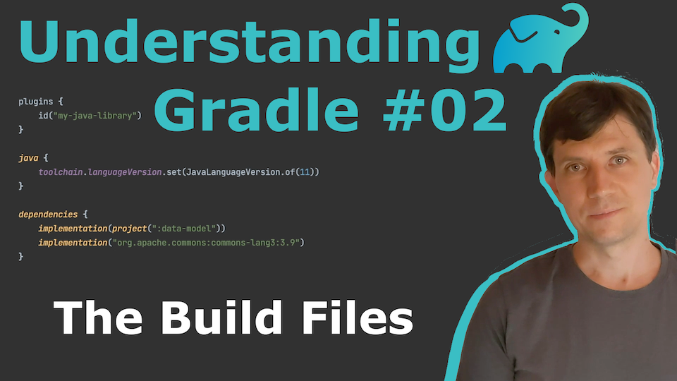
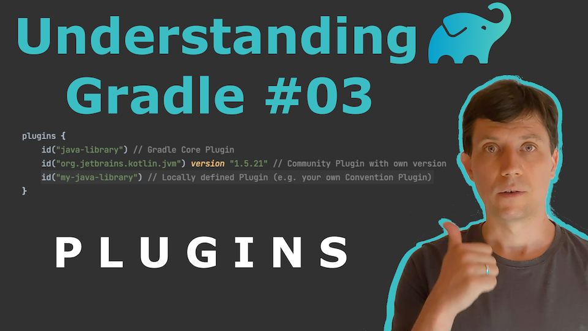
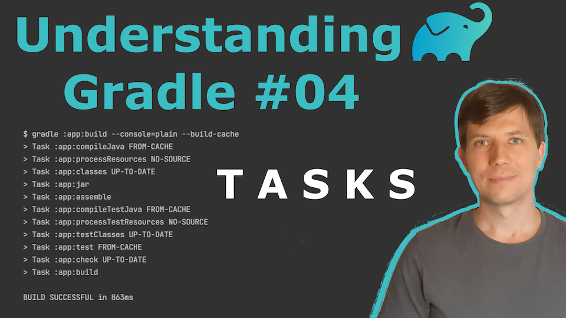
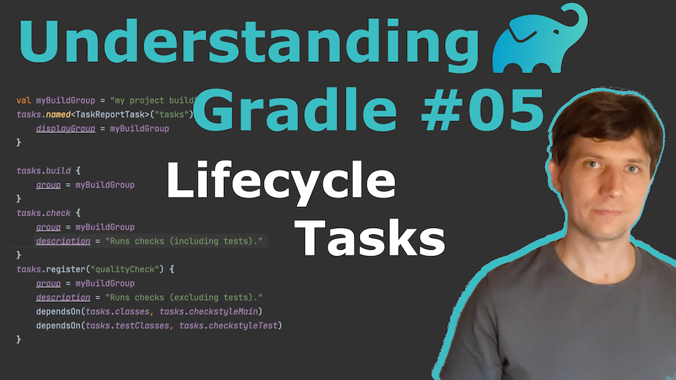
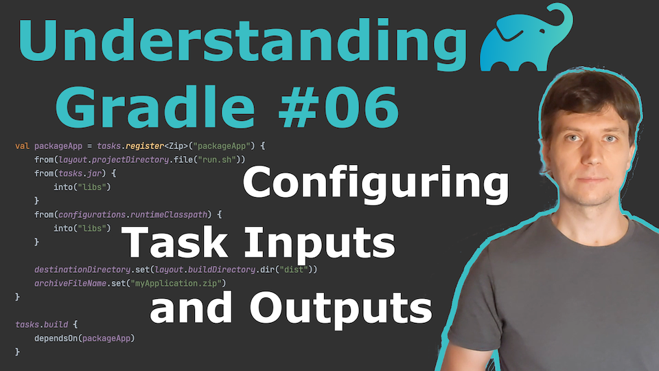
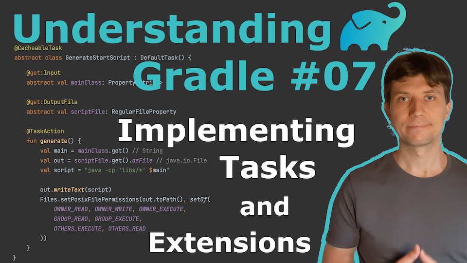
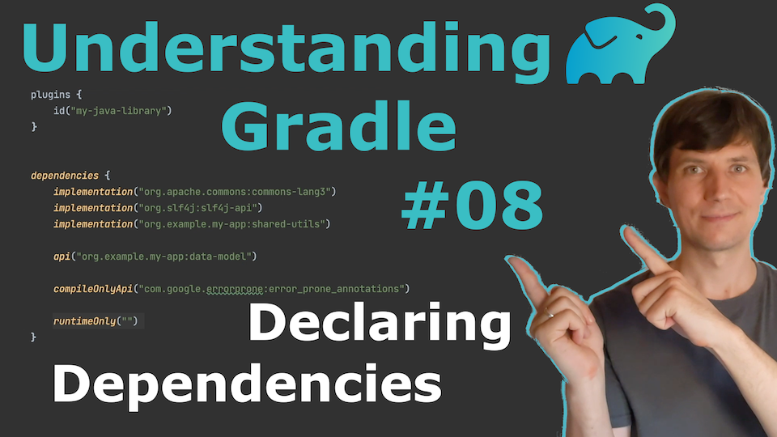
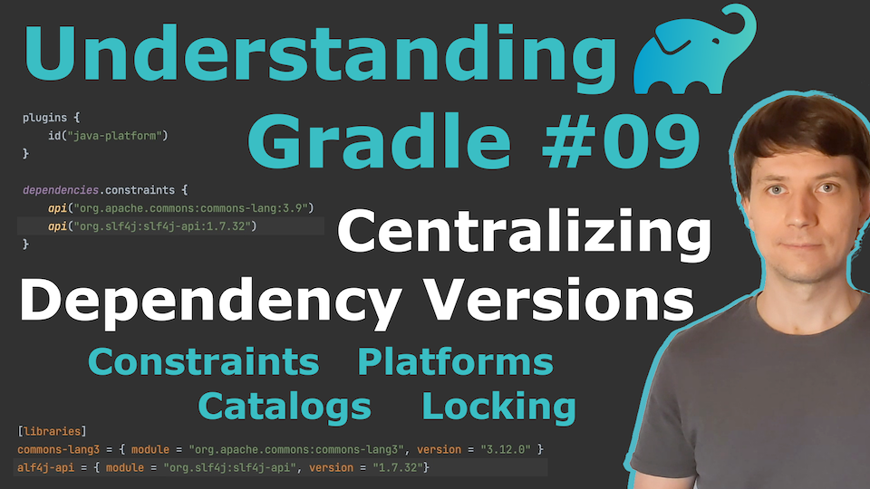
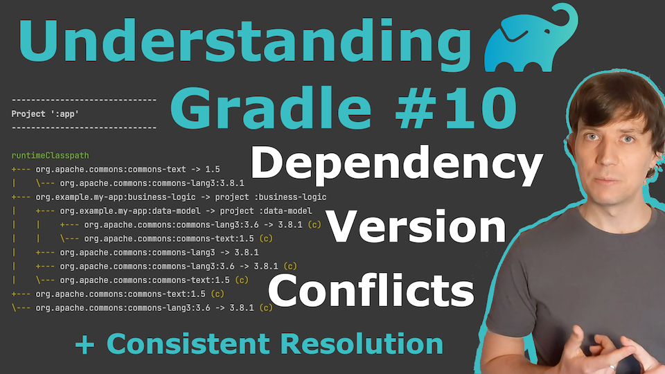
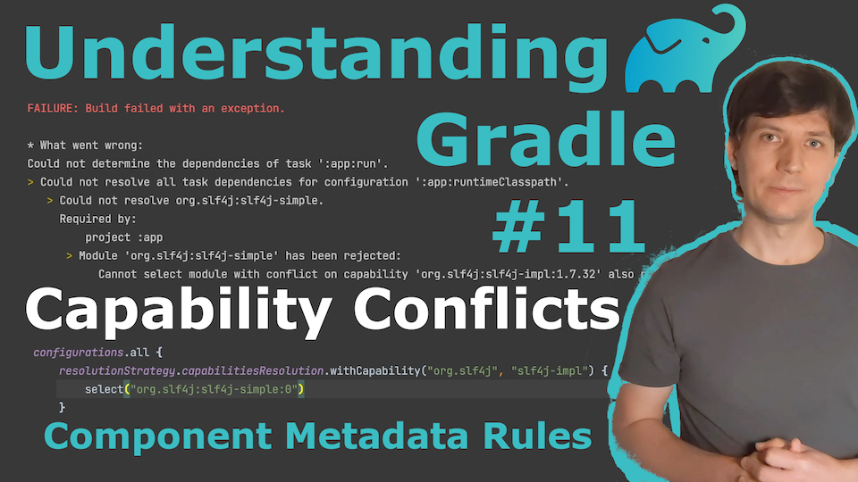
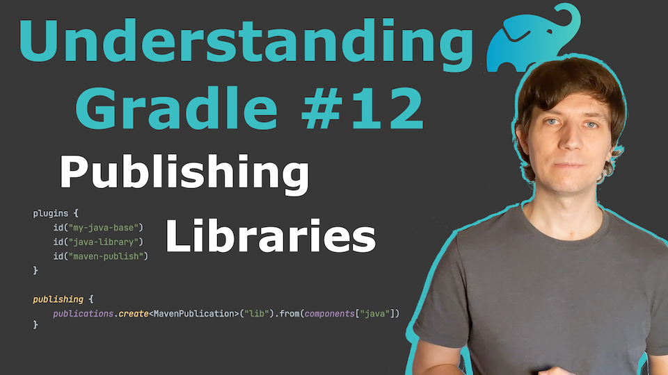
The Gradle Build Tool
One of the technologies I am most versed in is the Gradle Build Tool
for automating development processes and increasing developer productivity.
I worked on Gradle directly
for five years
and know (almost) all features and inner workings.
Most importantly, I know the best practices and which of the many rich features of the tool to use in what situation.
Gradle is a very powerful tool and it can most certainly be used to solve your very specific automation needs.
But it can be hard to navigate. Let me support you there. I offer:
- Individualised Gradle Trainings for Your Team. Covering all the topics important for you! For example: project structuring, modularization, build configuration sharing, Java projects, Android projects, Kotlin projects, Scala projects, Groovy projects, dependency management, build performance, plugins, tasks, testing, composite builds, and any other Gradle related topic.
- Gradle Expert Consulting on Your Project. Lets check your project together so you can absorb my knowledge! Whether you need to modernize an old dusty project, migrate to Gradle from another tool, or just started something new that is about to grow big and complex – I most certainly can support you to reach your goal more efficiently. If you think this might be for you, lets arrange a call to discuss your individual needs – no strings attached. Should we agree to collaborate, we will work together as pair or mob so you and your team learn along while we improve your Gradle project.
Whenever you have questions regarding Gradle, do not hestiate to
get in touch.
Maybe one of my Understanding Gradle videos can help you out already (check them out above)
Game Development
I am interested in Game and Interactive Media Development and the intersection of these with other software development disciplines.
I have my fair share of experience in the area – having worked full time on a game project for several years as developer and technical leader
(Tribal Wars 2)
and being currently part of a game dev team working on an unanounced project.
I am happy to chat,
if you are looking for freelance support
in this area.
Projects, Publications, Talks
Overview of Projects I was invovled in, articles I published and talks I gave over the years.
Contact
Dr. Jendrik Johannes
Grönlander Damm 35 A
22145 Hamburg
Germany
Grönlander Damm 35 A
22145 Hamburg
Germany
jendrik@onepiece.software
+49 178 5363745
+49 178 5363745
Ust-IdNr: DE343201228